![Rise logo]()
Overview
Rise OS is a compliance and audit platform for the NDIS. A provider sees exactly what their registration classes require, prepares and validates the evidence, and knows nothing is missing before they lodge; an auditor reviews the same material with structured access and records conformance. One source of truth, both sides of the table. This dossier is the domain model behind it: the standards, the documents, the graph that joins them, and the tools to explore it all.
Why
Every audit is one question: "show me." Show me the rule (say it), show me how it runs (do it), show me the records proving it happens (prove it). That question is graph-shaped: a standard is met by a policy, operationalised by a procedure, which uses a form, which records to a register, which yields the evidence. Completeness is a property of that graph, not of any folder, which is why folders and spreadsheets cannot answer "am I ready?" and this system can. The engine exists to validate before submission; the software exists so the rules are kept current once and every provider inherits the change. The full version, including the bet and how it is measured, is The Whys.
Start here
Open the whole-system node map →New here? The training front door →Through the auditor’s eyes →
The map is every real node and edge — 224 and 528 from the register's own graph, all 123 documents included — zoomable, tappable, with a key and an Easy Read guide inside. The front door is the same system for someone on their first day: nine steps, plain words, one new idea at a time.
The tools — open directly in a browser
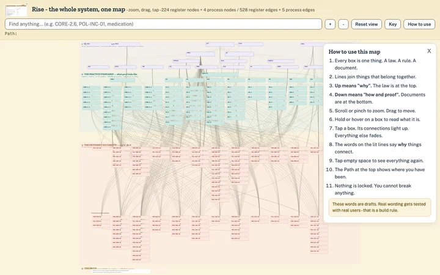
The whole-system node map
224 register nodes / 528 edges, generated from the seed JSON by rise_map_build.py. Zoom, drag, tap; edge words light up on focus. The four no-implementing-document standards are visible as an open item.
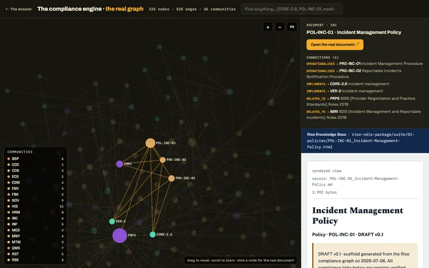
The compliance engine · the real graph
Our own constellation of all 224 nodes and 528 typed edges, in this dossier. Click any document node and the actual page from the 123-document suite opens beside the graph; search and the 36 communities included. The website’s version of the same graph is linked inside.
click a node, read the real document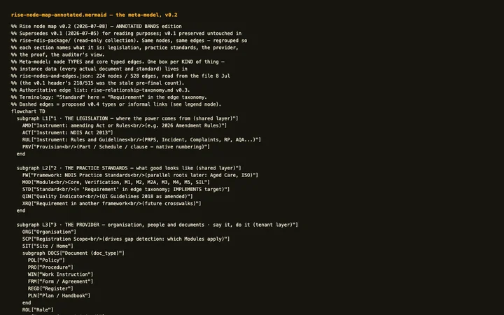
The meta-model, bands named (v0.2)
One box per kind of thing, regrouped into five named bands — legislation · standards · provider · proof · auditor's view. Source travels alongside.
v0.1 preserved untouched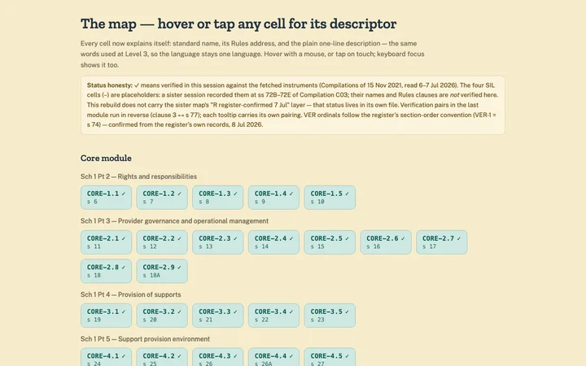
Coverage map with descriptors
All 70 cells with hover, tap and keyboard descriptors — name, address, plain line. VER ordinals per the register.
verified + register-confirmed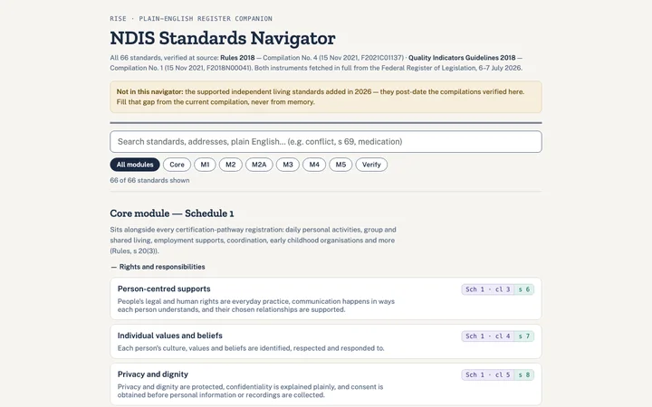
Standards navigator
Search all 66 verified standards, dual official titles flagged, copy-citation built in.
verified this project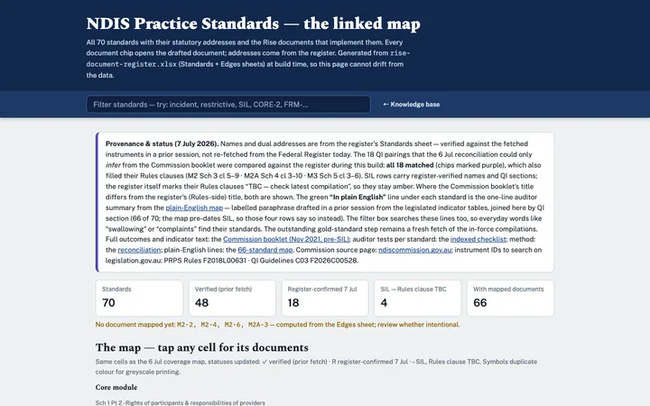
Standards linked map + search
The knowledge base’s generated page — all 70 standards with their implementing documents inline, and text search across both. Lives in the repo, not this bundle: rise-knowledge-base/standards.html — open it from the KB’s own index. In this bundle, the navigator (search) and the whole-system map (documents per standard, on tap) cover the same ground.
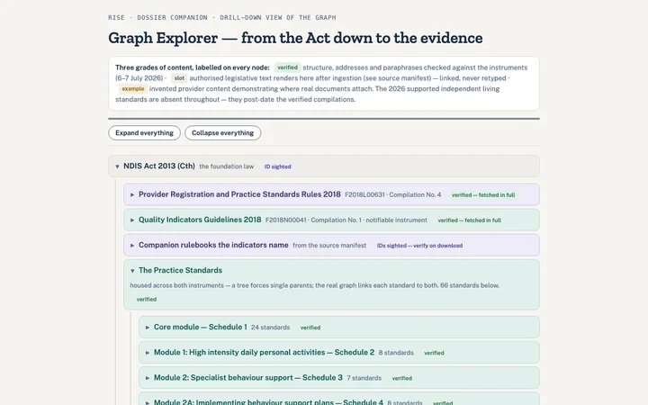
Graph explorer (drill-down tree)
Act → instruments → modules → standards with verified content, ingestion slots, one worked chain.
slots await ingestion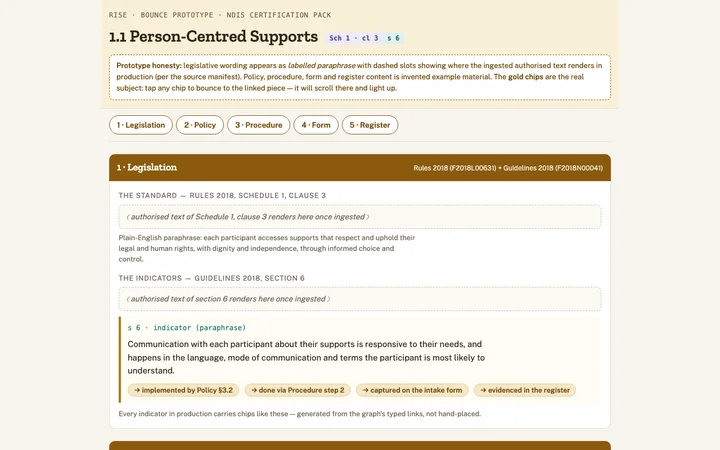
The bounce prototype
Walk one golden thread page by page — standard to policy to procedure to form to register to proof.
example organisation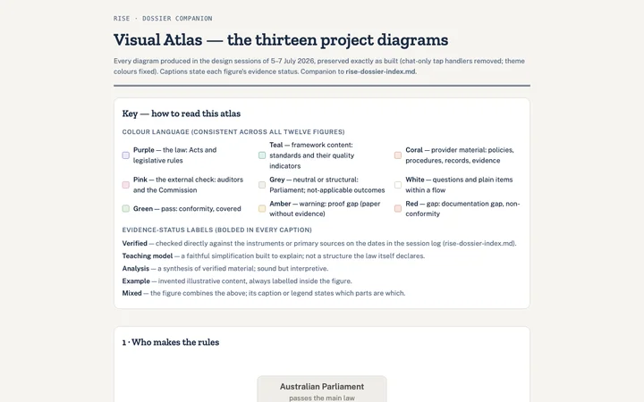
Visual atlas — thirteen diagrams
Every project diagram on one page, each captioned with its evidence status, ending with the provider learning ladder.
status per figure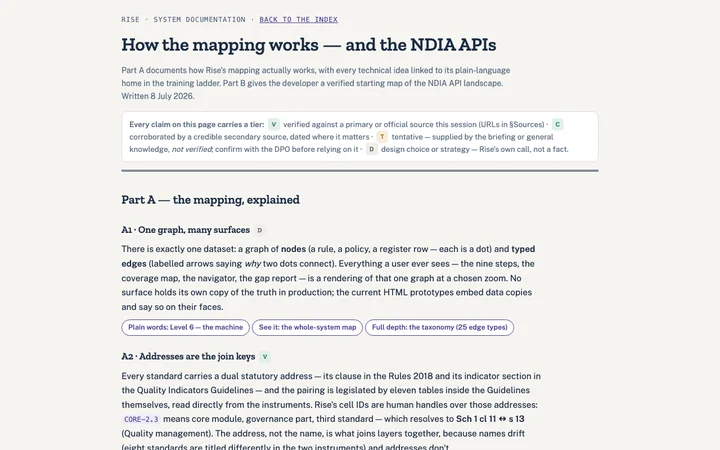
System & NDIA API documentation
How the mapping works with plain-language linkages, plus the verified Digital Partnership landscape — every claim tiered V/C/T/D.
NDIA process verified 8 Jul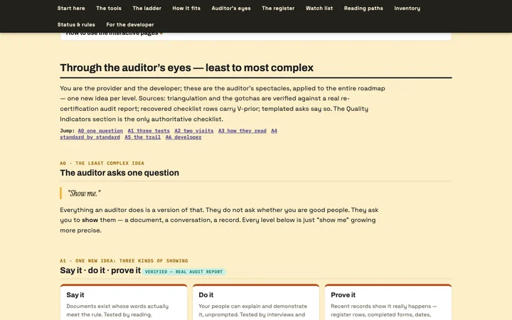
Through the auditor’s eyes
Baked into this document: the roadmap as an auditor experiences it, A0–A6 — the one question, three tests, two visits, per-standard asks for all 70, and the developer’s translation.
in this documentNotes and key documents
Working notes live in the shared doc below. The Drive links open only for accounts they are shared with; if one refuses, ask Jesse for access.
Team notes
A shared doc for comments, questions and decisions about this dossier and the platform. Write anything; date it and initial it.
editable by the teamRise Source of Truth
The best-practice template pack: policies, procedures, forms and registers, copied to Drive as our working master for the platform's content.
on DriveThe original pack, as received
Kept read only as provenance. Work from the Source of Truth copy, never from here.
read onlyThe briefs
The working plan and the individual briefs for the team, in the knowledge base beside this dossier.
on this siteThe training ladder — depth is the curriculum
Seven levels, one new kind of complexity per rung, nothing locked. Wording is Easy Read-informed draft: co-design and testing with real users is a build requirement, not a nicety.
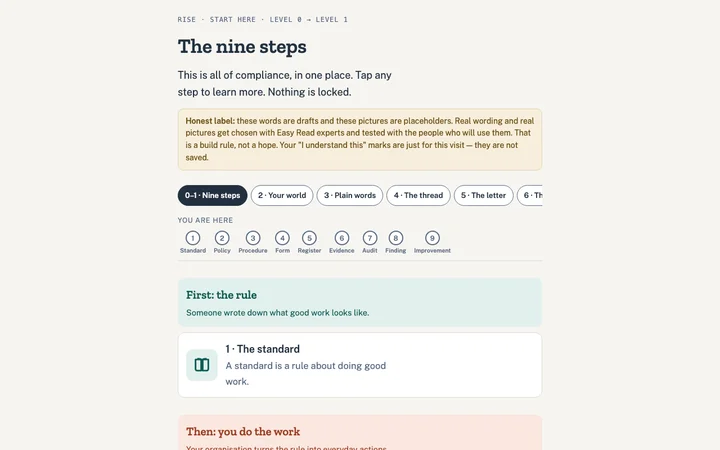
Levels 0–1 · The nine steps
Four boxes unfolding into the whole journey, with labelled tappable step nodes.
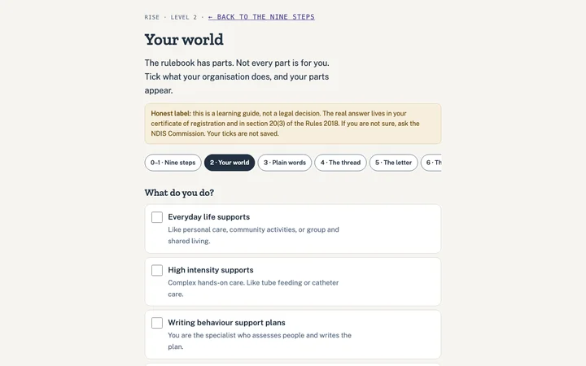
Level 2 · Your world
Tick what you do; your parts of the rulebook appear. A learning guide, not a legal determination.
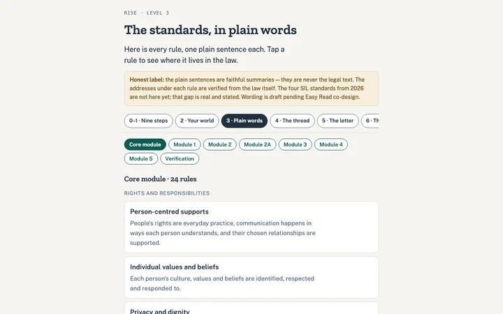
Level 3 · Plain words
Every standard as one plain sentence, its law address one tap down.
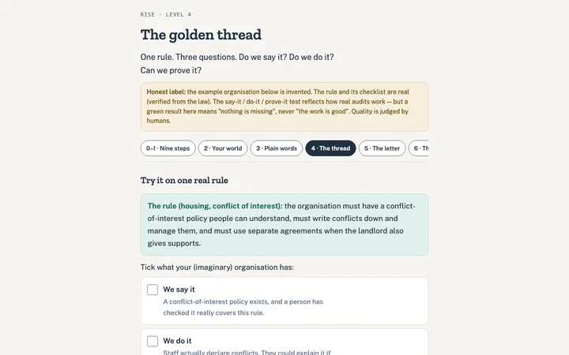
Level 4 · The thread
Say it · do it · prove it, as an interactive gap teacher on a real rule.
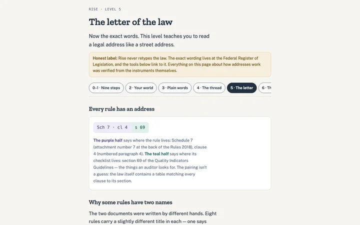
Level 5 · The letter
Reading addresses, dual titles, compilations, and how an auditor reads.
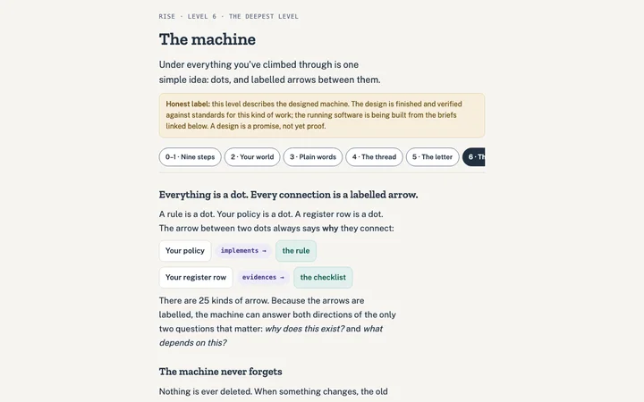
Level 6 · The machine
Dots, 25 labelled arrows, a memory that never deletes, who-said-so on every connection.
How it all fits — the documentation, in place
One graph, many surfaces: everything above renders the same dataset at a different zoom. The spine of that dataset is the nine-step chain, stored as typed edges (vocabulary from taxonomy v0.3):
| Step (plain) | Node | Stored edge |
|---|---|---|
| 1 · The standard | Requirement / Indicator | PART_OF module & framework · PUBLISHED_IN instrument · MADE_UNDER the Act |
| 2 · The policy | Policy | IMPLEMENTS — the compliance claim |
| 3 · The procedure | Procedure | OPERATIONALISES the policy |
| 4 · The form | Form | procedure USES form |
| 5 · The register | Register | form RECORDS_TO register |
| 6 · The evidence | Evidence | GENERATED_BY register · EVIDENCES the indicator |
| 7 · The audit | Audit | ASSESSES framework / module / requirement |
| 8 · The finding | Finding | RAISED_IN audit · CONCERNS its subject · CITES evidence |
| 9 · The improvement | Improvement Action | ADDRESSES the finding — the loop closes |
Addresses are the join keys
Every standard carries a dual statutory address — Rules clause ↔ Guidelines section — legislated by pairing tables inside the Guidelines. IDs like CORE-2.3 are human handles over those addresses (Sch 1 cl 11 ↔ s 13). Names drift (eight standards are titled differently across the two instruments); addresses don't. Full treatment: Level 5 and the documentation page §A2.
Who said so, and when
Every edge records its semantic type, its assertion source (human · read from the law · machine-suggested), and a verification status; machine suggestions are born needs_review. Nothing is deleted — changes SUPERSEDES, so "how did things stand last 30 June?" is answerable. The current compilation always governs ("as existing from time to time").
Applicability and gaps
Section 20(3) of the Rules is a 36-row table mapping supports to schedules and audit type — ingested as data, it powers both Level 2 and the gap engine's first gate. Gap states, in strict order: not applicable → unknown (always reported, never hidden) → documentation gap → proof gap → covered, for now. Green means nothing is missing — never that the work is good.
How to use the interactive pages
Every map and tool: hover, tap, or keyboard-focus a box to read what it is; tap to light up its connections; search to jump; nothing is locked and nothing breaks. Keep all files in one folder (or host the folder) so links between pages work — each page reminds you if opened alone. Full plain guide inside the map's "How to use" panel.
Through the auditor’s eyes — least to most complex
You are the provider and the developer; these are the auditor’s spectacles, applied to the entire roadmap — one new idea per level. Sources: triangulation and the gotchas are verified against a real re-certification audit report; recovered checklist rows carry V-prior; templated asks say so. The Quality Indicators section is the only authoritative checklist.
Jump: A0 one questionA1 three testsA2 two visitsA3 how they readA4 standard by standardA5 the trailA6 developer
A0 · the least complex ideaThe auditor asks one question
"Show me."
Everything an auditor does is a version of that. They do not ask whether you are good people. They ask you to show them — a document, a conversation, a record. Every level below is just "show me" growing more precise.
A1 · one new idea: three kinds of showingSay it · do it · prove it verified — real audit report
Say it
Documents exist whose words actually meet the rule. Tested by reading.
Do it
Your people can explain and demonstrate it, unprompted. Tested by interviews and watching.
Prove it
Recent records show it really happens — register rows, completed forms, dates, names. Tested by sampling.
The trick is triangulation: the three must agree. A beautiful policy nobody can explain fails. A confident worker with no records fails. Real audits cross-check all three, which is why no single artefact can save you and no single gap is hidden for long.
A2 · one new idea: when each test happensThe two visits — and where each gap dies
| Moment | What happens | Which gap dies here |
|---|---|---|
| Stage 1 — the desk | Document review: does anything even say it? | The documentation gap (nothing says it) fails here. |
| Stage 2 — the site | Interviews, observation, and sampling of records. | The proof gap (paper only) fails here — and paper-plus-proof without practice gets caught in interviews. |
| Mid-term | A check within 18 months of certification (Rules s 13B). | Anything that quietly lapsed after the certificate arrived. |
Lower-risk registrations take the verification pathway instead — a desk audit of documentation only. That is why the verification module is four standards about records: risk, incidents, complaints, and who your workers are.
A3 · one new idea: their reading methodHow an auditor reads the rulebook
First the gate: they only test what applies to you — your registration groups against the Rules' section 20(3) table (this is Level 2's question, asked with legal force). Then, for each applicable standard: read the clause → open its paired indicator section → turn each indicator line into a request — a document to see, a person to talk to, a sample to pull. Five steps, drawn in the atlas; the address grammar is Level 5.
An indicator is not a sentence to admire. It is a list of things you will be asked to hand over.
A4 · one new idea: the specificsStandard by standard — what they'll ask for
Pick a module. Every standard shows its plain line and the auditor's three asks. templated — derived asks are generated from the verified indicator summary; V-prior blocks are the recovered checklist rows from this project's audit research; real report notes come from an actual audit.
A5 · one new idea: the audit leaves a trail tooThe paper trail of the audit itself
The audit is not the end of the graph — it is nodes in it. The audit ASSESSES your standards; each finding is RAISED_IN that audit, CONCERNS something of yours, and CITES the evidence that exposed it; your improvement action ADDRESSES the finding. Then the loop closes: your findings-and-improvements register is itself evidence at the next audit — auditors read how you handled last time's problems as the truest test of your quality system (that is CORE-2.3 examining itself). See the pink band on the map.
A6 · the most complex levelThe developer's translation — what Rise must be able to show
| The auditor's moment | What they actually say | What Rise must surface | Where it's specified |
|---|---|---|---|
| The gate | "Which registration groups? Then only these schedules apply." | s 20(3) as data joined to the provider profile; everything pruned to it | Milestone 2 §applicability |
| Stage 1 desk | "Show me the document that meets clause X." | Verified IMPLEMENTS per indicator; documentation-gap list with zero false comfort | Milestone 2 §gap states |
| Sampling | "Pull the register. Pick these three rows." | Register rows with dates, owners, links to completed forms (RECORDS_TO, GENERATED_BY) | Milestone 1 schema |
| Interviews | "Who does this? Show me they're trained for it." | Role links: PERFORMED_BY, REQUIRES training, training records current | Taxonomy §4.4 |
| The as-at question | "Show me how things stood on 30 June last year." | Bitemporal as-at views; nothing deleted, everything SUPERSEDES | Milestone 1 §time |
| Evidence integrity | "Is this the record as it was, or as it's been tidied?" | Evidence frozen immutable at audit time (EVIDENCES snapshots) | Taxonomy §4.3 |
| The loop | "What did you do about last time's findings?" | Finding → ADDRESSES → closure trail, reportable as a register | Milestone 2 §loop |
The full register — every instrument, standard and document
Generated from the seed graph (rise-nodes-and-edges.json, 224 nodes / 528 edges) by rise_map_build.py — these listings are outputs, never hand-edited, so they cannot drift from the map. Standards and documents cross-link both ways; document types are derived from ID prefixes; the four standards with no implementing document are flagged inline. Every document row links to the document itself — a mirror of the knowledge-base suite (suite/) ships with this site, generated from the repo, which remains the master.
Instruments — 21
| ID | Title | Kind | Status |
|---|---|---|---|
ACT | National Disability Insurance Scheme Act 2013 (Cth) | Act | V |
AQA | NDIS (Approved Quality Auditors Scheme) Guidelines 2018 | Guidelines (notifiable instrument) | V |
AQAR25 | NDIS (Approved Quality Auditors) Rules 2025 | Rules | V |
BSPA | NDIS (NDIS Behaviour Support Practitioner Application) Guidelines 2020 | Guidelines | V |
CMR | NDIS (Complaints Management and Resolution) Rules 2018 | Rules | V |
COC | NDIS (Code of Conduct) Rules 2018 | Rules | V |
DDA | Disability Discrimination Act 1992 (Cth) | Act (adjacent) | C · re-verify |
IMRI | NDIS (Incident Management and Reportable Incidents) Rules 2018 | Rules | V |
IS26 | National Disability Insurance Scheme Amendment (Integrity and Safeguarding) Act 2026 | Amending Act | V |
NCE | NDIS (Registered NDIS Provider Notice of Changes and Events) Guidelines 2019 | Guidelines | V |
PD | NDIS (Provider Definition) Rule 2018 | Rule | V |
PRIV | Privacy Act 1988 (Cth) incl. Australian Privacy Principles & Notifiable Data Breaches scheme | Act (adjacent) | C · re-verify |
PRPS | NDIS (Provider Registration and Practice Standards) Rules 2018 | Rules (delegated legislation) | V |
PRPS26 | NDIS (Provider Registration and Practice Standards) Amendment (Mandatory Registration and Other Matters) Rules 2026 | Amending Rules | V |
QI | NDIS (Quality Indicators for NDIS Practice Standards) Guidelines 2018 | Guidelines | V |
QI26 | NDIS (Quality Indicators for NDIS Practice Standards) Amendment (Supported Independent Living) Guidelines 2026 | Amending Guidelines | V |
RPBS | NDIS (Restrictive Practices and Behaviour Support) Rules 2018 | Rules | V |
SDAC | NDIS (Specialist Disability Accommodation Conditions) Rule 2018 | Rule | V |
STWS | State/Territory NDIS worker screening laws (jurisdictional) | Act (adjacent) | C · re-verify |
WHSL | Work Health and Safety Act (jurisdictional) | Act (adjacent) | C · re-verify |
WSR | NDIS (Practice Standards - Worker Screening) Rules 2018 | Rules | V |
Standards — 70, with their implementing documents
| ID | Standard | Address | Implemented by |
|---|---|---|---|
CORE-1.1 | Person-centred supports | Sch 1 cl 3 ↔ s 6 | FRM-RGT-01 POL-RGT-01 STA-RGT-01 · map |
CORE-1.2 | Individual values and beliefs | Sch 1 cl 4 ↔ s 7 | POL-RGT-01 · map |
CORE-1.3 | Privacy and dignity | Sch 1 cl 5 ↔ s 8 | POL-INF-01 POL-RGT-02 · map |
CORE-1.4 | Independence and informed choice | Sch 1 cl 6 ↔ s 9 | FRM-INF-01 FRM-RGT-01 POL-RGT-03 STA-RGT-01 · map |
CORE-1.5 | Violence, abuse, neglect, exploitation and discrimination | Sch 1 cl 7 ↔ s 10 | POL-COC-01 POL-SGD-01 PRO-SGD-01 · map |
CORE-2.1 | Governance and operational management | Sch 1 cl 9 ↔ s 11 | FRM-GOV-01 POL-GOV-01 POL-GOV-02 POL-GOV-03 PRO-GOV-01 PRO-GOV-02 REG-GOV-01 REG-GOV-02 · map |
CORE-2.2 | Risk management | Sch 1 cl 10 ↔ s 12 | FRM-RSK-01 POL-RSK-01 PRO-RSK-01 REG-RSK-01 · map |
CORE-2.3 | Quality management | Sch 1 cl 11 ↔ s 13 | FRM-QMS-01 POL-QMS-01 PRO-QMS-01 PRO-QMS-02 PRO-QMS-03 REG-GOV-03 REG-QMS-01 REG-QMS-02 · map |
CORE-2.4 | Information management | Sch 1 cl 12 ↔ s 14 | FRM-INF-01 POL-INF-01 PRO-INF-01 PRO-INF-02 PRO-QMS-02 REG-INF-01 · map |
CORE-2.5 | Feedback and complaints management | Sch 1 cl 13 ↔ s 15 | FRM-FBK-01 POL-FBK-01 POL-GOV-03 PRO-FBK-01 REG-FBK-01 WIN-FBK-01 · map |
CORE-2.6 | Incident management | Sch 1 cl 14 ↔ s 16 | FRM-INC-01 POL-INC-01 PRO-INC-01 PRO-INC-02 REG-INC-01 WIN-INC-01 · map |
CORE-2.7 | Human resource management | Sch 1 cl 15 ↔ s 17 | FRM-HRM-01 FRM-HRM-02 POL-COC-01 POL-HRM-01 PRO-HRM-01 PRO-HRM-02 PRO-HRM-03 REG-HRM-01 REG-HRM-02 · map |
CORE-2.8 | Continuity of supports | Sch 1 cl 16 ↔ s 18 | PLN-COS-01 POL-COS-01 PRO-COS-01 · map |
CORE-2.9 | Emergency and disaster management | Sch 1 cl 16A ↔ s 18A | PLN-EDM-01 POL-EDM-01 PRO-EDM-01 REG-EDM-01 · map |
CORE-3.1 | Access to supports | Sch 1 cl 18 ↔ s 19 | FRM-SUP-01 POL-SUP-01 PRO-SUP-01 REG-SUP-01 · map |
CORE-3.2 | Support planning | Sch 1 cl 19 ↔ s 20 | FRM-SUP-02 POL-SUP-02 PRO-SUP-02 · map |
CORE-3.3 | Service agreements with participants | Sch 1 cl 20 ↔ s 21 | AGR-SUP-01 POL-SUP-03 REG-SUP-01 STA-RGT-01 · map |
CORE-3.4 | Responsive support provision | Sch 1 cl 21 ↔ s 22 | PRO-SUP-03 · map |
CORE-3.5 | Transitions to or from a provider | Sch 1 cl 22 ↔ s 23 | FRM-SUP-04 POL-SUP-04 PRO-SUP-04 · map |
CORE-4.1 | Safe environment | Sch 1 cl 24 ↔ s 24 | FRM-ENV-01 POL-ENV-01 POL-WHS-01 PRO-ENV-01 REG-ENV-01 · map |
CORE-4.2 | Participant money and property | Sch 1 cl 25 ↔ s 25 | FRM-MNY-01 POL-MNY-01 PRO-MNY-01 REG-MNY-01 · map |
CORE-4.3 | Management of medication | Sch 1 cl 26 ↔ s 26 | FRM-MED-01 POL-MED-01 PRO-MED-01 WIN-MED-01 · map |
CORE-4.4 | Mealtime management | Sch 1 cl 26A ↔ s 26A | FRM-MTM-01 POL-MTM-01 PRO-MTM-01 · map |
CORE-4.5 | Management of waste | Sch 1 cl 27 ↔ s 27 | POL-WST-01 PRO-WST-01 · map |
M1-1 | Complex bowel care | Sch 2 cl 3 ↔ s 29 | FRM-HID-01 POL-HID-01 PRO-HID-01 REG-HID-01 · map |
M1-2 | Enteral feeding and management | Sch 2 cl 4 ↔ s 30 | POL-HID-01 PRO-HID-02 · map |
M1-3 | Severe dysphagia management | Sch 2 cl 4A ↔ s 30A | POL-HID-01 PRO-HID-03 PRO-MTM-01 · map |
M1-4 | Tracheostomy management | Sch 2 cl 5 ↔ s 31 | POL-HID-01 PRO-HID-04 · map |
M1-5 | Urinary catheter management | Sch 2 cl 6 ↔ s 32 | POL-HID-01 PRO-HID-05 · map |
M1-6 | Ventilator management | Sch 2 cl 7 ↔ s 33 | POL-HID-01 PRO-HID-06 · map |
M1-7 | Subcutaneous injections | Sch 2 cl 8 ↔ s 34 | POL-HID-01 PRO-HID-07 · map |
M1-8 | Complex wound management | Sch 2 cl 9 ↔ s 35 | POL-HID-01 PRO-HID-08 · map |
M2-1 | Behaviour support in the NDIS | Sch 3 cl 3 ↔ s 38 | POL-BSP-01 · map |
M2-2 | Regulated restrictive practices | Sch 3 cl 4 ↔ s 39 | none — open item · map |
M2-3 | Behaviour support plans | Sch 3 cl 5 ↔ s 40 | PRO-BSP-03 · map |
M2-4 | Supporting implementation | Sch 3 cl 6 ↔ s 41 | none — open item · map |
M2-5 | Plan monitoring and review | Sch 3 cl 7 ↔ s 42 | PRO-BSP-03 · map |
M2-6 | Reportable incidents (restrictive practices) | Sch 3 cl 8 ↔ s 43 | none — open item · map |
M2-7 | Interim behaviour support plans | Sch 3 cl 9 ↔ s 44 | PRO-BSP-03 · map |
M2A-1 | Behaviour support in the NDIS | Sch 4 cl 3 ↔ s 47 | POL-BSP-01 · map |
M2A-2 | Regulated restrictive practices | Sch 4 cl 4 ↔ s 48 | PRO-BSP-02 REG-BSP-01 · map |
M2A-3 | Supporting assessment and development | Sch 4 cl 5 ↔ s 49 | none — open item · map |
M2A-4 | Supporting implementation | Sch 4 cl 6 ↔ s 50 | PRO-BSP-01 · map |
M2A-5 | Monitoring and reporting use | Sch 4 cl 7 ↔ s 51 | FRM-BSP-01 PRO-BSP-02 REG-BSP-01 · map |
M2A-6 | Plan monitoring and review | Sch 4 cl 8 ↔ s 52 | PRO-BSP-01 · map |
M2A-7 | Reportable incidents (restrictive practices) | Sch 4 cl 9 ↔ s 53 | FRM-BSP-01 PRO-BSP-02 · map |
M2A-8 | Interim behaviour support plans | Sch 4 cl 10 ↔ s 54 | PRO-BSP-01 · map |
M3-1 | The child | Sch 5 cl 3 ↔ s 56 | POL-ECS-01 · map |
M3-2 | The family | Sch 5 cl 4 ↔ s 57 | POL-ECS-01 PRO-ECS-01 · map |
M3-3 | Inclusion | Sch 5 cl 5 ↔ s 58 | POL-ECS-01 · map |
M3-4 | Collaboration | Sch 5 cl 6 ↔ s 59 | POL-ECS-01 PRO-ECS-01 · map |
M3-5 | Capacity building | Sch 5 cl 7 ↔ s 60 | POL-ECS-01 · map |
M3-6 | Evidence-informed supports | Sch 5 cl 8 ↔ s 61 | POL-ECS-01 · map |
M3-7 | Outcome based approach | Sch 5 cl 9 ↔ s 62 | POL-ECS-01 · map |
M4-1 | Specialised support coordination | Sch 6 cl 3 ↔ s 64 | POL-SCO-01 · map |
M4-2 | Management of supports | Sch 6 cl 4 ↔ s 65 | POL-SCO-01 · map |
M4-3 | Conflict of interest | Sch 6 cl 5 ↔ s 66 | POL-GOV-02 POL-SCO-01 PRO-SCO-01 · map |
M5-1 | Rights and responsibilities | Sch 7 cl 3 ↔ s 68 | POL-SDA-01 · map |
M5-2 | Conflict of interest | Sch 7 cl 4 ↔ s 69 | POL-GOV-02 POL-SDA-01 · map |
M5-3 | Service agreements with participants | Sch 7 cl 5 ↔ s 70 | POL-SDA-01 · map |
M5-4 | Enrolment of SDA dwellings | Sch 7 cl 6 ↔ s 71 | POL-SDA-01 PRO-SDA-01 REG-SDA-01 · map |
M5-5 | Tenancy management | Sch 7 cl 7 ↔ s 72 | POL-SDA-01 PRO-SDA-01 · map |
VER-1 | Human resource management | Sch 8 cl 6 ↔ s 74 | FRM-HRM-01 POL-HRM-01 PRO-HRM-01 REG-HRM-01 · map |
VER-2 | Incident management | Sch 8 cl 5 ↔ s 75 | FRM-INC-01 POL-INC-01 PRO-INC-01 PRO-INC-02 REG-INC-01 · map |
VER-3 | Complaints management and resolution | Sch 8 cl 4 ↔ s 76 | FRM-FBK-01 POL-FBK-01 PRO-FBK-01 REG-FBK-01 · map |
VER-4 | Risk management | Sch 8 cl 3 ↔ s 77 (pairs run in reverse clause order) | POL-RSK-01 PRO-RSK-01 REG-RSK-01 · map |
SIL-1 | Supported decision-making | s 72B · clause TBC | FRM-SIL-01 POL-RGT-03 PRO-SIL-01 · map |
SIL-2 | Safeguarding | s 72C · clause TBC | POL-SGD-01 POL-SIL-02 PRO-SGD-01 PRO-SIL-02 · map |
SIL-3 | Practice governance | s 72D · clause TBC | POL-SIL-03 PRO-SIL-03 REG-SIL-01 · map |
SIL-4 | Agreements about tenancy, housing and support arrangements | s 72E · clause TBC | AGR-SIL-01 PRO-SIL-04 · map |
The document suite — all 123, grouped by cluster
| ID | Title | Type | Implements | Relates to · chain |
|---|---|---|---|---|
POL-COC-01 | NDIS Code of Conduct Policy | Policy | CORE-2.7 CORE-1.5 | COC · map · read · ↗ |
FRM-INF-01 | Consent to Collect, Use and Share Information Form | Form | CORE-2.4 CORE-1.4 | PRPS PRIV · map · read · ↗ |
POL-INF-01 | Information Management and Privacy Policy | Policy | CORE-2.4 CORE-1.3 | PRPS PRIV · map · read · ↗ |
PRO-INF-01 | Records Management Procedure | Procedure | CORE-2.4 | PRPS PRIV · OPERATIONALISES→POL-INF-01 · USES→FRM-INF-01 · map · read · ↗ |
PRO-INF-02 | Privacy and Data Breach Response Procedure | Procedure | CORE-2.4 | PRO-INC-01 PRIV · OPERATIONALISES→POL-INF-01 · map · read · ↗ |
REG-INF-01 | Data Breach Register | Register | CORE-2.4 | PRIV · map · read · ↗ |
FRM-QMS-01 | Improvement / Corrective Action Request Form | Form | CORE-2.3 | PRPS · RECORDS_TO→REG-QMS-01 · map · read · ↗ |
POL-QMS-01 | Quality Management and Continuous Improvement Policy | Policy | CORE-2.3 | PRPS · map · read · ↗ |
PRO-QMS-01 | Continuous Improvement Procedure | Procedure | CORE-2.3 | PRPS · OPERATIONALISES→POL-QMS-01 · USES→FRM-QMS-01 · map · read · ↗ |
PRO-QMS-02 | Document and Records Control Procedure | Procedure | CORE-2.3 CORE-2.4 | PRPS · OPERATIONALISES→POL-QMS-01 · map · read · ↗ |
PRO-QMS-03 | Internal Audit and Self-Assessment Procedure | Procedure | CORE-2.3 | PRPS QI · OPERATIONALISES→POL-QMS-01 · map · read · ↗ |
REG-QMS-01 | Continuous Improvement Register | Register | CORE-2.3 | PRPS · map · read · ↗ |
REG-QMS-02 | Internal Audit Schedule and Register | Register | CORE-2.3 | PRPS QI · map · read · ↗ |
PLN-COS-01 | Business Continuity Plan | Plan | CORE-2.8 | PRPS · OPERATIONALISES→POL-COS-01 · map · read · ↗ |
POL-COS-01 | Continuity of Supports Policy | Policy | CORE-2.8 | PRPS · map · read · ↗ |
PRO-COS-01 | Worker Absence and Backup Arrangements Procedure | Procedure | CORE-2.8 | PRPS · OPERATIONALISES→POL-COS-01 · map · read · ↗ |
PLN-EDM-01 | Emergency and Disaster Management Plan | Plan | CORE-2.9 | PRPS · OPERATIONALISES→POL-EDM-01 · map · read · ↗ |
POL-EDM-01 | Emergency and Disaster Management Policy | Policy | CORE-2.9 | PRPS · map · read · ↗ |
PRO-EDM-01 | Emergency Response and Evacuation Procedure | Procedure | CORE-2.9 | PRPS WHSL · OPERATIONALISES→POL-EDM-01 · map · read · ↗ |
REG-EDM-01 | Emergency Preparedness and Drills Register | Register | CORE-2.9 | PRPS · map · read · ↗ |
FRM-RGT-01 | Communication, Advocacy and Support Preferences Form | Form | CORE-1.1 CORE-1.4 | PRPS · map · read · ↗ |
POL-RGT-01 | Person-Centred Supports Policy | Policy | CORE-1.1 CORE-1.2 | PRPS ACT · map · read · ↗ |
POL-RGT-02 | Privacy and Dignity Policy | Policy | CORE-1.3 | PRPS PRIV · map · read · ↗ |
POL-RGT-03 | Independence, Informed Choice and Supported Decision-Making Policy | Policy | CORE-1.4 SIL-1 | PRO-SIL-01 PRPS PRPS26 · map · read · ↗ |
STA-RGT-01 | Participant Handbook / Welcome Pack | Handbook | CORE-1.1 CORE-1.4 CORE-3.3 | PRPS COC · map · read · ↗ |
AGR-SUP-01 | Service Agreement Template | Agreement | CORE-3.3 | PRPS · RECORDS_TO→REG-SUP-01 · map · read · ↗ |
FRM-SUP-01 | Referral and Intake Form | Form | CORE-3.1 | PRPS · map · read · ↗ |
FRM-SUP-02 | Participant Support Plan Template | Form | CORE-3.2 | PRPS · RECORDS_TO→REG-SUP-01 · map · read · ↗ |
FRM-SUP-04 | Transition and Exit Checklist | Form | CORE-3.5 | PRPS · map · read · ↗ |
POL-SUP-01 | Access to Supports Policy | Policy | CORE-3.1 | PRPS · map · read · ↗ |
POL-SUP-02 | Support Planning Policy | Policy | CORE-3.2 | PRPS · map · read · ↗ |
POL-SUP-03 | Service Agreements Policy | Policy | CORE-3.3 | PRPS · map · read · ↗ |
POL-SUP-04 | Transitions To and From the Provider Policy | Policy | CORE-3.5 | PRPS · map · read · ↗ |
PRO-SUP-01 | Intake, Eligibility and Waitlist Procedure | Procedure | CORE-3.1 | PRPS · OPERATIONALISES→POL-SUP-01 · USES→FRM-SUP-01 · map · read · ↗ |
PRO-SUP-02 | Support Planning and Review Procedure | Procedure | CORE-3.2 | PRPS · OPERATIONALISES→POL-SUP-02 · USES→FRM-SUP-02 · map · read · ↗ |
PRO-SUP-03 | Responsive Support Provision Procedure | Procedure | CORE-3.4 | PRPS · OPERATIONALISES→POL-SUP-03 · USES→AGR-SUP-01 · map · read · ↗ |
PRO-SUP-04 | Entry, Exit and Transition Procedure | Procedure | CORE-3.5 | PRPS · OPERATIONALISES→POL-SUP-04 · USES→FRM-SUP-04 · map · read · ↗ |
REG-SUP-01 | Participant and Service Agreement Register | Register | CORE-3.3 CORE-3.1 | PRPS · map · read · ↗ |
FRM-GOV-01 | Conflict of Interest Declaration Form | Form | CORE-2.1 | PRPS · RECORDS_TO→REG-GOV-02 · map · read · ↗ |
POL-GOV-01 | Governance and Operational Management Policy | Policy | CORE-2.1 | PRPS ACT · map · read · ↗ |
POL-GOV-02 | Conflict of Interest Policy | Policy | CORE-2.1 M4-3 M5-2 | PRPS · map · read · ↗ |
POL-GOV-03 | Whistleblower and Disclosure Protection Policy | Policy | CORE-2.1 CORE-2.5 | PRO-FBK-01 IS26 ACT COC · map · read · ↗ |
PRO-GOV-01 | Delegations and Decision-Making Procedure | Procedure | CORE-2.1 | PRPS · OPERATIONALISES→POL-GOV-01 · USES→FRM-GOV-01 · map · read · ↗ |
PRO-GOV-02 | Notification of Changes and Events Procedure (Commission notice under rr 13-13A) | Procedure | CORE-2.1 | PRPS PRPS26 NCE · OPERATIONALISES→POL-GOV-01 · map · read · ↗ |
REG-GOV-01 | Delegations Register | Register | CORE-2.1 | PRPS · map · read · ↗ |
REG-GOV-02 | Conflict of Interest Register | Register | CORE-2.1 | PRPS · map · read · ↗ |
REG-GOV-03 | Master Document Register (this workbook) | Register | CORE-2.3 | PRPS · map · read · ↗ |
FRM-ENV-01 | Environmental Safety Checklist | Form | CORE-4.1 | WHSL · RECORDS_TO→REG-ENV-01 · map · read · ↗ |
POL-ENV-01 | Safe Environment Policy | Policy | CORE-4.1 | PRPS WHSL · map · read · ↗ |
PRO-ENV-01 | Home and Workplace Safety Check Procedure | Procedure | CORE-4.1 | PRPS WHSL · OPERATIONALISES→POL-ENV-01 · USES→FRM-ENV-01 · map · read · ↗ |
REG-ENV-01 | Hazard and Maintenance Register | Register | CORE-4.1 | WHSL · map · read · ↗ |
FRM-MNY-01 | Participant Money Transaction Record | Form | CORE-4.2 | PRPS · RECORDS_TO→REG-MNY-01 · map · read · ↗ |
POL-MNY-01 | Participant Money and Property Policy | Policy | CORE-4.2 | PRPS · map · read · ↗ |
PRO-MNY-01 | Handling Participant Money and Property Procedure | Procedure | CORE-4.2 | PRPS · OPERATIONALISES→POL-MNY-01 · USES→FRM-MNY-01 · map · read · ↗ |
REG-MNY-01 | Participant Money and Property Register | Register | CORE-4.2 | PRPS · map · read · ↗ |
FRM-MED-01 | Medication Administration Record (chart) | Form | CORE-4.3 | PRPS · map · read · ↗ |
POL-MED-01 | Medication Management Policy | Policy | CORE-4.3 | PRPS · map · read · ↗ |
PRO-MED-01 | Medication Administration Procedure | Procedure | CORE-4.3 | PRO-INC-01 PRPS · OPERATIONALISES→POL-MED-01 · USES→FRM-MED-01 · map · read · ↗ |
WIN-MED-01 | Administering PRN Medication (frontline) | Work instruction | CORE-4.3 | PRPS · OPERATIONALISES→PRO-MED-01 · map · read · ↗ |
POL-WST-01 | Waste Management and Infection Control Policy | Policy | CORE-4.5 | PRPS WHSL · map · read · ↗ |
PRO-WST-01 | Infection Control and Waste Handling Procedure | Procedure | CORE-4.5 | WHSL · OPERATIONALISES→POL-WST-01 · map · read · ↗ |
POL-WHS-01 | Work Health and Safety Policy | Policy | CORE-4.1 | POL-ENV-01 WHSL · map · read · ↗ |
FRM-MTM-01 | Mealtime Management Plan | Form | CORE-4.4 | PRPS · map · read · ↗ |
POL-MTM-01 | Mealtime Management Policy | Policy | CORE-4.4 | PRPS · map · read · ↗ |
PRO-MTM-01 | Mealtime Management Procedure | Procedure | CORE-4.4 M1-3 | PRO-HID-03 PRPS · OPERATIONALISES→POL-MTM-01 · USES→FRM-MTM-01 · map · read · ↗ |
FRM-HRM-01 | Worker Screening and Credential Checklist | Form | CORE-2.7 VER-1 | WSR · RECORDS_TO→REG-HRM-01 · map · read · ↗ |
FRM-HRM-02 | NDIS Code of Conduct Acknowledgement Form | Form | CORE-2.7 | COC · map · read · ↗ |
POL-HRM-01 | Human Resource Management Policy | Policy | CORE-2.7 VER-1 | PRPS WSR · map · read · ↗ |
PRO-HRM-01 | Recruitment, Screening and Induction Procedure | Procedure | CORE-2.7 VER-1 | WSR COC · OPERATIONALISES→POL-HRM-01 · USES→FRM-HRM-01 · USES→FRM-HRM-02 · map · read · ↗ |
PRO-HRM-02 | Supervision and Performance Procedure | Procedure | CORE-2.7 | PRPS · OPERATIONALISES→POL-HRM-01 · map · read · ↗ |
PRO-HRM-03 | Training and Competency Procedure | Procedure | CORE-2.7 | PRPS · OPERATIONALISES→POL-HRM-01 · map · read · ↗ |
REG-HRM-01 | Worker Screening Register | Register | CORE-2.7 VER-1 | WSR · map · read · ↗ |
REG-HRM-02 | Training and Competency Register | Register | CORE-2.7 | PRPS · map · read · ↗ |
FRM-HID-01 | Participant Health Support Plan | Form | M1-1 | PRPS · map · read · ↗ |
POL-HID-01 | High Intensity Supports Policy | Policy | M1-1 M1-2 M1-3 M1-4 M1-5 M1-6 M1-7 M1-8 | PRPS QI · map · read · ↗ |
PRO-HID-01 | Complex Bowel Care Procedure | Procedure | M1-1 | PRPS · OPERATIONALISES→POL-HID-01 · USES→FRM-HID-01 · map · read · ↗ |
PRO-HID-02 | Enteral Feeding and Management Procedure | Procedure | M1-2 | PRPS · OPERATIONALISES→POL-HID-01 · map · read · ↗ |
PRO-HID-03 | Severe Dysphagia Management Procedure | Procedure | M1-3 | PRPS · OPERATIONALISES→POL-HID-01 · map · read · ↗ |
PRO-HID-04 | Tracheostomy Management Procedure | Procedure | M1-4 | PRPS · OPERATIONALISES→POL-HID-01 · map · read · ↗ |
PRO-HID-05 | Urinary Catheter Management Procedure | Procedure | M1-5 | PRPS · OPERATIONALISES→POL-HID-01 · map · read · ↗ |
PRO-HID-06 | Ventilator Management Procedure | Procedure | M1-6 | PRPS · OPERATIONALISES→POL-HID-01 · map · read · ↗ |
PRO-HID-07 | Subcutaneous Injections Procedure | Procedure | M1-7 | PRPS · OPERATIONALISES→POL-HID-01 · map · read · ↗ |
PRO-HID-08 | Complex Wound Management Procedure | Procedure | M1-8 | PRPS · OPERATIONALISES→POL-HID-01 · map · read · ↗ |
REG-HID-01 | High Intensity Training and Competency Register | Register | M1-1 | PRPS QI · map · read · ↗ |
FRM-RSK-01 | Risk Assessment Form | Form | CORE-2.2 | PRPS · RECORDS_TO→REG-RSK-01 · map · read · ↗ |
POL-RSK-01 | Risk Management Policy | Policy | CORE-2.2 VER-4 | PRPS · map · read · ↗ |
PRO-RSK-01 | Risk Assessment and Treatment Procedure | Procedure | CORE-2.2 VER-4 | PRPS · OPERATIONALISES→POL-RSK-01 · USES→FRM-RSK-01 · map · read · ↗ |
REG-RSK-01 | Risk Register | Register | CORE-2.2 VER-4 | PRPS · map · read · ↗ |
FRM-FBK-01 | Feedback and Complaints Form | Form | CORE-2.5 VER-3 | CMR · RECORDS_TO→REG-FBK-01 · map · read · ↗ |
POL-FBK-01 | Feedback and Complaints Policy | Policy | CORE-2.5 VER-3 | PRPS CMR · map · read · ↗ |
PRO-FBK-01 | Complaints Handling and Resolution Procedure | Procedure | CORE-2.5 VER-3 | CMR · OPERATIONALISES→POL-FBK-01 · USES→FRM-FBK-01 · map · read · ↗ |
REG-FBK-01 | Complaints Register | Register | CORE-2.5 VER-3 | CMR · map · read · ↗ |
WIN-FBK-01 | Receiving and Recording a Complaint (frontline) | Work instruction | CORE-2.5 | CMR · OPERATIONALISES→PRO-FBK-01 · map · read · ↗ |
FRM-INC-01 | Incident Report Form | Form | CORE-2.6 VER-2 | IMRI · RECORDS_TO→REG-INC-01 · map · read · ↗ |
POL-INC-01 | Incident Management Policy | Policy | CORE-2.6 VER-2 | PRPS IMRI · map · read · ↗ |
PRO-INC-01 | Incident Management Procedure | Procedure | CORE-2.6 VER-2 | IMRI · OPERATIONALISES→POL-INC-01 · USES→FRM-INC-01 · map · read · ↗ |
PRO-INC-02 | Reportable Incidents Notification Procedure | Procedure | CORE-2.6 VER-2 | IMRI · OPERATIONALISES→POL-INC-01 · map · read · ↗ |
REG-INC-01 | Incident Register | Register | CORE-2.6 VER-2 | IMRI · map · read · ↗ |
WIN-INC-01 | Responding to an Incident (frontline) | Work instruction | CORE-2.6 | IMRI · OPERATIONALISES→PRO-INC-01 · map · read · ↗ |
POL-SGD-01 | Safeguarding Policy (zero tolerance of violence, abuse, neglect, exploitation and discrimination) | Policy | CORE-1.5 SIL-2 | PRPS COC IMRI · map · read · ↗ |
PRO-SGD-01 | Responding to Abuse, Neglect and Exploitation Procedure | Procedure | CORE-1.5 SIL-2 | PRO-INC-02 IMRI COC · OPERATIONALISES→POL-SGD-01 · map · read · ↗ |
FRM-BSP-01 | Restrictive Practice Use Record | Form | M2A-5 M2A-7 | RPBS · RECORDS_TO→REG-BSP-01 · map · read · ↗ |
POL-BSP-01 | Positive Behaviour Support Policy | Policy | M2A-1 M2-1 | RPBS PRPS · map · read · ↗ |
PRO-BSP-01 | Behaviour Support Plan Implementation and Monitoring Procedure | Procedure | M2A-4 M2A-6 M2A-8 | RPBS · OPERATIONALISES→POL-BSP-01 · map · read · ↗ |
PRO-BSP-02 | Regulated Restrictive Practices Authorisation, Use and Reporting Procedure | Procedure | M2A-2 M2A-5 M2A-7 | PRO-INC-02 RPBS IMRI · OPERATIONALISES→POL-BSP-01 · USES→FRM-BSP-01 · map · read · ↗ |
PRO-BSP-03 | Behaviour Support Plan Development and Review Procedure (specialist providers) | Procedure | M2-3 M2-5 M2-7 | RPBS · OPERATIONALISES→POL-BSP-01 · map · read · ↗ |
REG-BSP-01 | Restrictive Practices Register | Register | M2A-2 M2A-5 | RPBS · map · read · ↗ |
POL-ECS-01 | Early Childhood Supports Policy | Policy | M3-1 M3-2 M3-3 M3-4 M3-5 M3-6 M3-7 | PRPS · map · read · ↗ |
PRO-ECS-01 | Family-Centred Practice and Key Worker Procedure | Procedure | M3-2 M3-4 | PRPS · OPERATIONALISES→POL-ECS-01 · map · read · ↗ |
POL-SCO-01 | Specialised Support Coordination Policy | Policy | M4-1 M4-2 M4-3 | PRPS · map · read · ↗ |
PRO-SCO-01 | Support Coordination Conflict of Interest Procedure | Procedure | M4-3 | PRPS · OPERATIONALISES→POL-SCO-01 · map · read · ↗ |
POL-SDA-01 | Specialist Disability Accommodation Policy | Policy | M5-1 M5-2 M5-3 M5-4 M5-5 | SDAC PRPS · map · read · ↗ |
PRO-SDA-01 | SDA Dwelling Enrolment and Compliance Procedure | Procedure | M5-4 M5-5 | SDAC · OPERATIONALISES→POL-SDA-01 · map · read · ↗ |
REG-SDA-01 | SDA Dwelling Register | Register | M5-4 | SDAC · map · read · ↗ |
AGR-SIL-01 | SIL Tenancy and Support Agreement Templates | Agreement | SIL-4 | PRPS26 · RECORDS_TO→REG-SIL-01 · map · read · ↗ |
FRM-SIL-01 | Decision Support Record | Form | SIL-1 | PRPS26 · map · read · ↗ |
POL-SIL-02 | Safeguarding in the Home Policy (SIL) | Policy | SIL-2 | PRPS26 IMRI · map · read · ↗ |
POL-SIL-03 | SIL Practice Governance Policy | Policy | SIL-3 | PRPS26 QI26 · map · read · ↗ |
PRO-SIL-01 | Supported Decision-Making Procedure | Procedure | SIL-1 | PRPS26 · OPERATIONALISES→POL-RGT-03 · USES→FRM-SIL-01 · map · read · ↗ |
PRO-SIL-02 | Home Risk, Dignity of Risk and Safeguarding Procedure | Procedure | SIL-2 | PRPS26 · OPERATIONALISES→POL-SIL-02 · map · read · ↗ |
PRO-SIL-03 | House Governance, Handover and Worker Training Procedure | Procedure | SIL-3 | PRPS26 · OPERATIONALISES→POL-SIL-03 · map · read · ↗ |
PRO-SIL-04 | Tenancy and Support Agreements Procedure (SIL) | Procedure | SIL-4 | PRPS26 · OPERATIONALISES→POL-SUP-03 · USES→AGR-SIL-01 · map · read · ↗ |
REG-SIL-01 | SIL Homes Register | Register | SIL-3 | PRPS26 · map · read · ↗ |
Document reader — every document, drafted and linked
Pick any of the 123 documents and read it right here — the same styled pages that ship with this site in suite/ (a generated mirror; the knowledge base stays master).
Watch list — moving parts
- The 2026 amendment layer — IS26 · PRPS26 · QI26 · AQAR25. Only AQAR25’s register ID is sighted (F2025L01383); fetch the others before reliance.
- SIL standards — titles register-verified; Rules clauses TBC — re-verify against F2026C00528.
- Four standards with no implementing document — M2-2, M2-4, M2-6, M2A-3; open item, visible on the map as teal boxes with no coral line.
- Six policies with no downstream chain — POL-COC-01, POL-GOV-02, POL-GOV-03, POL-RGT-01, POL-RGT-02, POL-WHS-01; register owner to confirm intent or wire the edges.
- NDIA Digital Partnership — the catalogue, participant-scope and PACE questions await the DPO’s answers, which supersede our notes.
- Easy Read wording — drafts until co-designed and comprehension-tested with real users.
- Branded investor set — regenerates from 7-July sources until the delta lands in the repo.
Reading paths — start where you are
New support worker / coordinator
Front door → climb the ladder one level per sitting → the map when curious. Twenty minutes to Level 2 is a good first day.
Developer / Claude Code
KB repo CLAUDE.md first → apply the 8-Jul delta → dossier index §5 → Milestone 1 brief → source manifest → Milestone 2. The map regenerates via rise_map_build.py.
Board / investor
The Rise-branded dossier (in the knowledge base) → atlas figure 13 (the learning ladder) → documentation Part B for the NDIA pathway.
Preparing for an audit
Through the auditor’s eyes (least → most complex, in this document) → coverage map → the auditor guide in the knowledge base → Level 4 → your own register.
Full inventory — reference documents
The authoritative per-file inventory with evidence status lives in the handover index; these are the load-bearing documents:
Handover index
Per-artefact epistemic standing, reading order for Claude Code, the open-questions register, the session log.
verified inventoryReferences
Every source behind every verified claim — instruments with exact URLs, retention gaps stated, never reconstructed.
retention-honestRelationship taxonomy v0.3
The 25 typed edges, OLIR-verified crosswalk semantics, extension governance.
Milestone 1 brief · Milestone 2 brief
Schema, immutable supersede, bitemporal as-at, acceptance tests; then the indicator parser and the five-state gap engine.
Source manifest
Authorised downloads with provenance — executes before any seed data.
Plain-English map · Pyramid model
All 66 standards in plain words; the full address pyramid.
Zero-knowledge training model v1.0
The confirmed seven-level architecture; Easy Read design laws with the evidence caveat built in.
Knowledge-base merge audit
8 Jul verdict: nothing lost. Hash evidence, the vintage gap, seed-JSON facts, recommendations.
verdict: nothing lostHandover & next actions
The three external workstreams, standing rules, definition of done.
UI interaction notes
The five-panel book, pin-and-swap recommendation, folder-tip pattern.
Status & standing rules
Never reconstruct clause numbers, IDs or counts from memory — retrieve or leave a [GAP]. Primary sources supersede secondary; the DPO's answers supersede the API notes; the register's current compilation supersedes everything here. Every claim carries V / C / T / D. Sources behind every stamp: references.html.
For the developer
Apply rise-dossier-delta-2026-07-08/ at the knowledge-base repo root (collections stay read-only), run python3 _kb/build_kb.py, regenerate rise-branded/. The delta ships its own entry page, the merge audit, and the map generator. Next actions live in the handover record; the DPO email comes before any paperwork.